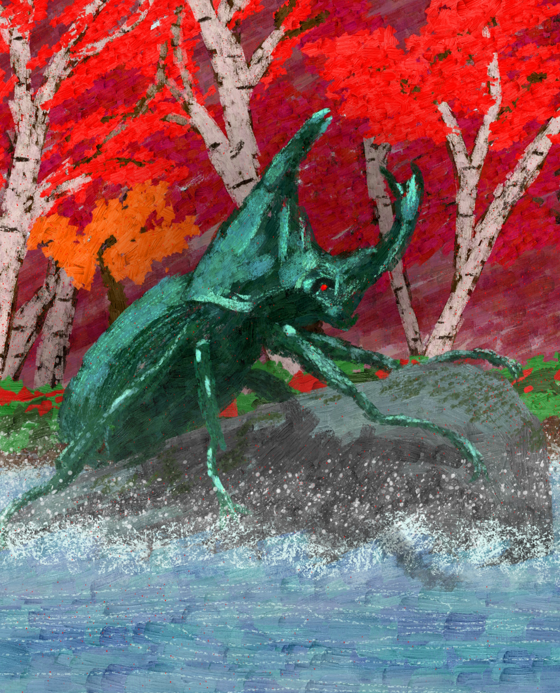

Particle Animation
This is an animation made in blender using the particle simulation system.
The effect on the walls was achieved using cell noise added to the mesh with dynamic paint.
The audio for the animation was created in audacity using the sound of two waterbottles, a tibetan singing bowl, and a computer keyboard.
ChaiNNer was used to upscale the blender output and Davinci Resolve was then used to add post processing and render the final video.
Sauropelta Sculpt
This was my second little project to help me learn digital sculpting in blender.

It's a sauropelta from the cretaceous period, a 6 metre long armoured dinosaur that lived 108.5 million years ago.
Parallax Card Art shader
I created a stencil-based solution to displaying pseudo-3D card art for a trading card game I was working on in my spare time early at university.

I also drew the "Beeble Beetle" card from scratch in Krita! I am very proud as it was my first foray into 2D art and I think it came out really well.
Drinky Bird
This is a model of a "drinky bird" made in Blender.


Bowling Render
This is an old project from when I was first learning Blender where I created a bowling scene.